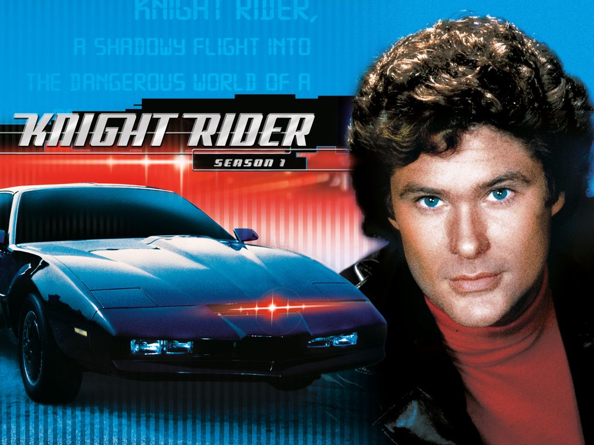

Knight rider
Verbind 4 leds met pinnen 3 tot en met 6 en programmeer een looplicht maar dan met een knightrider effect. Frequentie is opnieuw 1Hz. Wat ga je moeten doen met de delay?

Knight Rider is een Amerikaanse tv-serie uit 1982 over een pratende auto met de naam KITT. Die auto had vooraan een rode lichtbalk waarin het licht heen en weer schoof, en dat is het effect dat je hier nabouwt. Dezelfde producer had het vier jaar eerder al gebruikt voor de Cylons in Battlestar Galactica.

Indienen
Sla je oefening op.
Overloop volgende checklist om je oefening zelf te evalueren:
Oplossing
Dit is een sourcing-schakeling: anders dan bij de
Looplicht-oefening hangen de leds hier met de kathode (via de
weerstand) aan een vaste GND-rail, en met de anode rechtstreeks aan de
Arduino-pin. Er vloeit dus enkel stroom wanneer de pin HIGH
staat (de pin "bront" de stroom naar de led). Bij LOW
staat er geen spanningsverschil over de led en blijft hij uit. De code
moet dus HIGH gebruiken om een led aan te zetten, en
LOW om hem uit te zetten.
Bij een knightrider-effect loopt het licht heen en weer:
1→2→3→4→3→2→1→... Een volledige cyclus
bestaat dus niet uit 4, maar uit 6 stappen (de eerste en
laatste led worden maar 1x aangeraakt per cyclus, de 2 middelste leds
2x). Om de frequentie op 1Hz te houden moet de delay per stap dus
1000 / 6 ≈ 167ms zijn in plaats van 1000 / 4.
Net als bij het looplicht zit één stap in
laatBranden(). In de loop() zie je de zes
stappen dan onder elkaar staan, en meteen ook waarom het er zes zijn en
geen acht: led 1 en led 4 komen maar één keer voor.
const int led1 = 3;
const int led2 = 4;
const int led3 = 5;
const int led4 = 6;
// 6 stappen per volledige cyclus, dus 1000 / 6 = 166 ms per stap
const int stapDuur = 166;
void setup()
{
pinMode(led1, OUTPUT);
pinMode(led2, OUTPUT);
pinMode(led3, OUTPUT);
pinMode(led4, OUTPUT);
// sourcing: LOW = led uit, dus we beginnen met alles uit
digitalWrite(led1, LOW);
digitalWrite(led2, LOW);
digitalWrite(led3, LOW);
digitalWrite(led4, LOW);
}
void laatBranden(int pin)
{
digitalWrite(pin, HIGH); // sourcing: HIGH = led aan
delay(stapDuur);
digitalWrite(pin, LOW); // sourcing: LOW = led uit
}
void loop()
{
// Heen
laatBranden(led1);
laatBranden(led2);
laatBranden(led3);
laatBranden(led4);
// En terug, zonder de uiteinden nog eens: anders zou de cyclus 8 stappen duren
laatBranden(led3);
laatBranden(led2);
}